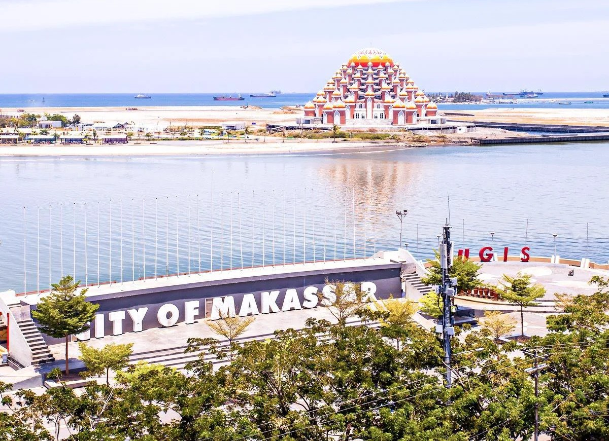
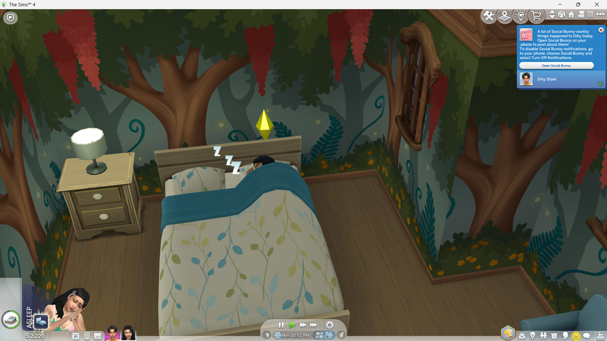
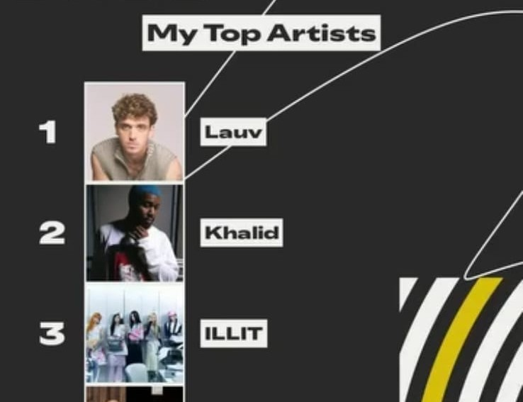
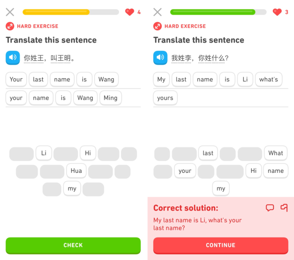

Beranda
Halo, nama saya Annisa Nurul Islami, a.k.a Kyunys☽. Saya adalah seorang lulusan Sistem Informasi
dari Universitas Hasanuddin yang memiliki minat pada bidang teknologi, keamanan siber,
dan pengembangan aplikasi.
Website ini dibuat sebagai media pengenalan diri serta memenuhi tugas akhir kelas
Belajar Dasar Pemrograman Web.
Kota Asal

Saya berasal dari Makassar, Sulawesi Selatan. Kota Makassar dikenal
memiliki dua julukan utama yang paling populer, yaitu
Kota Daeng dan Kota Anging Mammiri.
Kota Daeng
Julukan ini berasal dari sapaan khas "Daeng" yang digunakan
sehari-hari oleh masyarakat Makassar sebagai bentuk penghormatan
dan keakraban. Julukan ini mencerminkan budaya dan tradisi yang kuat
di kota ini.
Kota Anging Mammiri
Julukan ini diambil dari judul lagu daerah populer "Anging Mammiri"
yang menggambarkan sejuknya hembusan angin sepoi-sepoi di kota tersebut.
Dengan kata lain, julukan ini menggambarkan karakteristik iklim dan
geografis Kota Makassar.
Julukan Lainnya
Selain kedua julukan tersebut, Makassar juga dikenal luas sebagai
Kota Pelabuhan karena peran pentingnya sebagai pusat
perdagangan dan jantung logistik di kawasan timurIndonesia.

Pada masa lampau, kota ini juga memiliki julukan Rotterdam van Celebes
karena keindahan dan tata kotanya yang mirip dengan Kota Rotterdam di Belanda pada
era kolonial. Julukan ini mencerminkan sejarah kolonial dan perkembangan kota yang pesat.
Hobi / Minat
Saya memiliki beberapa hobi yang saya nikmati di waktu luang, antara lain:
Bermain Game

Saya suka bermain game strategi dan role-playing. Beberapa game yang saya sukai
antara lain Sims 4 dan Mobile Legends.
Mendengarkan Musik

Saya suka mendengarkan berbagai genre musik, terutama musik pop, R&B, dan K-pop.
Artist yang saya sukai antara lain Lauv, Khalid, dan ILLIT.
Menonton Film
Saya menikmati film-film animasi dan action seperti Coco, Boboiboy, dan Avengers.
Mempelajari Bahasa Baru

Saya suka mempelajari bahasa baru, terutama bahasa Inggris dan Cina. Saya percaya bahwa
belajar bahasa membuka peluang baru dan memperluas wawasan.